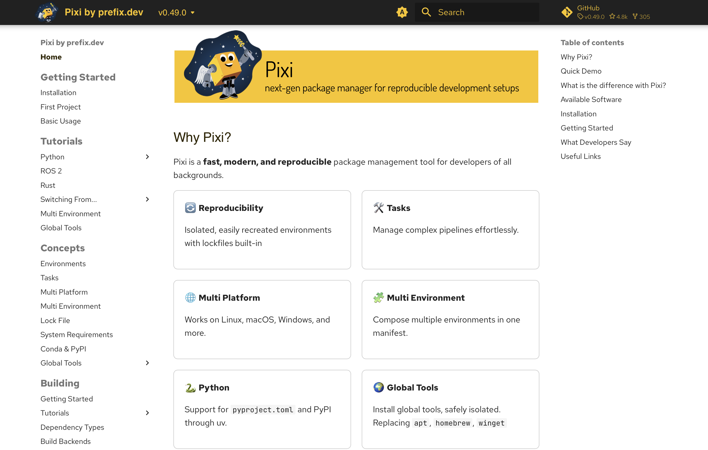

Introduction to Pixi
Introduction
Different operating systems bring different challenges to bioinformatics. Windows, for instance, doesn’t really support most bioinformatics tools, or your computer might run a different version of a specific tool than mine. One way to solve this, and make research more reproducible, is through the use of environments. Bioinformatics environments specify the tools neded for the task at hand, and environment managers install these tools with all their dependencies. There are many different kinds of environment managers, and for this course we are going to use Pixi.
There are, of course, other ways to solve tool access and compatibility issues, such as running virtual machines. In our experience, however, environments are a bit easier to manage and are more portable across different systems and users.

As you can see, you can run Pixi on all major operating systems, and you can include various platforms in your Pixi environment.
Log in to the course server and follow along:
Installation
Installing Pixi is really easy and described thoroughly here with separate installation guides for Windows and Mac/Linux.
To source your shell, you need to source the startup files, in Linux it’s the ~/.bashrc file, in Mac it’s the ~/.zshrc file.
Setting Up An Environment
You should create separate environments for each project you run, just to keep things tidy. To create an environment, you have to specify a name for your environment. You can include different platforms/operating systems in your environment, for example if you want to develop your code on a Windows system, and later use the same code on many samples on a large Linux cluster. You can also include different vetted sources for your tools, the so called channels.
Here, we will create a project called name_pixi_training (please use your own name to avoid creating multiple environments with the same name). We are adding the conda-forge and bioconda channels with the -c flag.
pixi init name_pixi_training -c conda-forge -c biocondaPixi will create a folder named name_pixi_training with a a file pixi.toml. Let’s have a look at that file!
Here is the code for changing directories, listing files, and viewing the contents of a file:
cd name_sida_training
ls
less pixi.tomlTo exit the less view, press q for quit.
pixi.toml
The .toml file give your information about your project. Let’s have a look at one I made one my computer before adding any dependencies to my environment. How is it different from the one you’ve made on HPC2N?
Click on the numbers in the list below to highlight the corresponding code.
- 1
- Overview section of the environment.
- 2
- Added channels - these are the sources we allow for our dependencies/ tools.
- 3
- The name of the environment.
- 4
- Operating system the environment is optimised for.
- 5
- This is where we can define tasks - interesting, but not covered in this course.
- 6
- Here will be the list of tool installed within the environment (once we have added them).
Your current platform will be automatically detected and added to the environment. If you want to add different platforms, you add them with the -p linux-64 flag. In this example, you are adding Linux64. See the Pixi docs for the full list of supported platforms.
If you are adding a platform that doesn’t natively run on your OS (e.g. adding Linux when running on Windows) be sure to add the OS you are running your system on as well!
Once you have used the environment, or added a dependency/tool to it, you will find yet another file, called pixi.lock.
pixi.lock
The .lock file give you information on the channels you have decided to add, as well as the information on where the packages were downloaded from, license information, md5 information, and more.
Do not delete the .toml or .lock files, or you will break your environment!
Adding Dependencies
Adding dependencies to the .toml file is telling Pixi to install the specified program for you. However, instead of installing it globally, it only gets installed in the environment.
To do this, we use the pixi add function. Let’s try adding Quarto to our environments.
You must be in the folder of the project to add software!
pixi add quartoIf you are unsure of how a function works, you can always query it, usually with the --help or -h flags. Here’s how it would look for the pixi add function
pixi add --helpA general rule of thumb is that a single hyphen - is followed by a single letter flag, while double hyphens -- are usually followed by multi-letter flags
Here is the pixi.toml we’ve seen earlier after I have added Quarto to my environment. You can see that the dependencies have been updated to include Quarto.
[workspace]
channels = ["conda-forge", "bioconda"]
name = "amrei_pixi_training"
platforms = ["osx-arm64"]
version = "0.1.0"
[tasks]
[dependencies]
quarto = ">=1.7.32,<2"Running a Package
Now that we have an environment with a tool installed, we actually want to use it. For this we have several options:
pixi run
Use pixi to run the tool with the pixi run command.
Let’s query the help function within Quarto:
pixi run quarto --helpTo use other tools, simply substitute quarto with the package you’ve added, and the tool specific commands.
And just to see that we have not installed Quarto on the server itself, try out running Quarto without Pixi: it will tell you:
quarto: command not found
pixi shell
Alternatively, you can create and “enter” the environment with
pixi shelland then interact with the installed dependencies as if they were installed the traditional way:
quarto --helpOnce you are using the pixi shell, you will see that your prompt has changed and is now prefixex with [name_of_environment]. This is how you can check in which environment you operate (and this is why it is important that you name your environments in a way that makes sense).
To exit the environment, type
exit